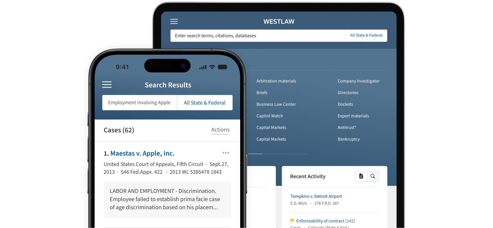
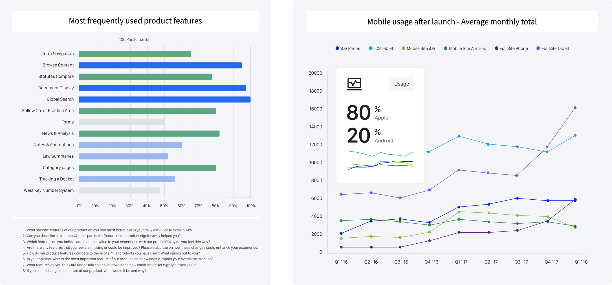
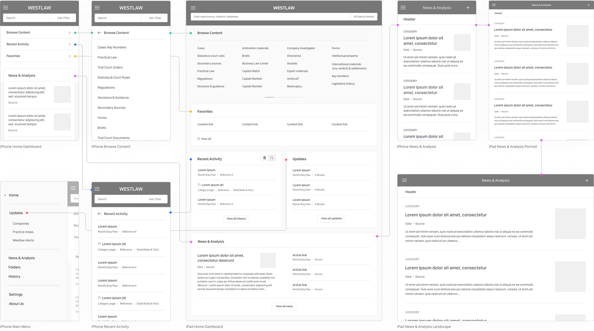
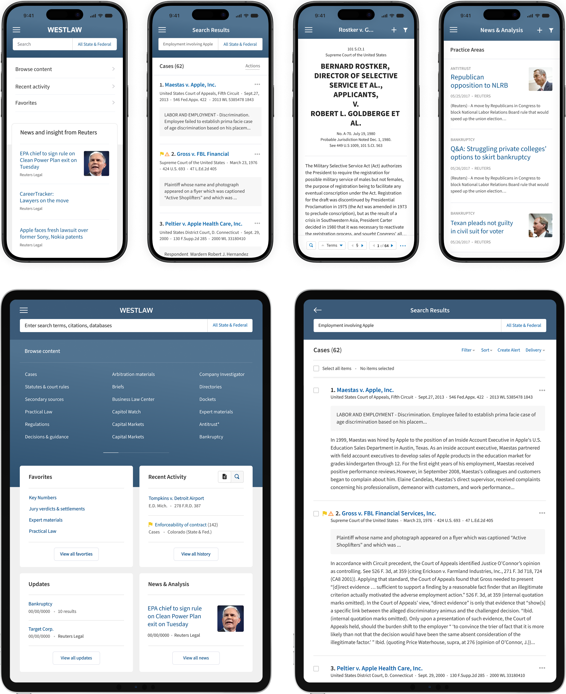

<div class="view">
<div class="template-inner template-inner--case-study" style='background-color:#fff'>

    <div class="case-study-wrapper">
        <div class='text-center case-study-section case-study-section--hero' style='background-color:#F4F5F8'>
            <div class="case-btn-back-wrapper">
                <a href='/page/case-studies' id="case-study-back" class="btn btn-link">
                    
                </a>
            </div>
            <div class="case-study__content">
                <h1>Launching Westlaw’s iPhone <br> App & aligning its iPad UX</h1>
                <p>UX Design Lead, Visual & Interaction Design, Content Strategy, and Testing.</p>
                <a href="https://www.figma.com/proto/qESLRga2Goq4UJSbxCrygs/Westlaw-CS?page-id=0%3A1&node-id=1-24&p=f&viewport=383%2C445%2C0.25&t=OBAbaTxLmy9QLfuS-1&scaling=min-zoom&content-scaling=fixed" class="btn btn-link">Full case study</a>
            </div>
            <div class="img-wrap  case-hero__picture case-study-inner-content">
                <picture>
                    <source 
                        media="(max-width: 768px)" 
                        srcset="../../assets/images/M_WestlawHero.png"
                    />
                    
                </picture>
            </div>
        </div>
        <!-- end section -->
        <div class="case-study-section">
            <div class="case-study-inner-content">
                <h2 class="text-center">Data informed decisions</h2>
                    <p class="">Westlaw is an online legal research service and database for legal professionals in over 60 countries. While most research is conducted on desktops, users sought a mobile solution. Since Thomson Reuters Westlaw did not offer an app to meet this demand, we explored how to adapt Westlaw's desktop experience into a new iPhone app. The following showcases a few selected wireframes that were tested and the outlined approach. Select the lnk above for full case study.
                        <br><br>
                        To provide a clear and organized pathway to legal information, insights and pain points were collected from surveys and interviews with lawyers, paralegals, and librarians. This effort had several objectives: Identify target users, leverage desktop UX, understand features, align iPad app with new iPhone app.</p>
                <picture>
                    <source 
                        media="(max-width: 768px)" 
                        srcset="../../assets/images/M_WestlawData.png"
                    />
                    
                </picture>
            </div>
            <div class="case-study-inner-content">
                <h2 class="text-center">Crafting a solution</h2>
                    <p class="">As the UX Design Lead, I partnered with three researchers, five QA team members, three product owners and eight engineers to analyze the data, design wireframes, high fidelity concepts and test prototypes. We reviewed user analytics based on device usage and engaged users including law firms with high fidelity prototypes to ensure product features met their needs. The survey feedback determined core features and attributes that users valued the most.</p>
                <picture>
                    <source 
                        media="(max-width: 768px)" 
                        srcset="../../assets/images/M_WestlawWireframes.png"
                    />
                    
                </picture>
            </div>
            <div class="case-study-inner-content">
                <h2 class="text-center">Outcome & impact</h2>
                    <p class="">The research conducted for the new Westlaw iPhone app provided crucial insights into user preferences, opportunities for simplifying the user experience, and strategies for creating a scalable product. The approach involved generative and qualitative methods, including surveys, navigation testing, wireframing, prototype testing, and A/B testing. The research revealed that iOS is the preferred operating system among users and identified essential features, such as:
                        <br><br>
                        1. Search functionality for quick access to information.<br>
                        2. Document Display for easy reading and navigation.<br>
                        3. News & Analysis to keep users informed about developments in law.<br>
                        4. The ability to follow specific practice areas or companies for tailored updates.
                        <br><br>
                        The iOS apps addressed the needs for legal services companies, law practices, government employees, and educational institutions, through organized access to legal information from Westlaw anywhere. As a result, the Westlaw iPhone app won over 13 awards for the best legal research app. View the full case study for a in depth analysis and Westlaw in the App Store.</p>
                        <picture>
                    <source 
                        media="(max-width: 768px)" 
                        srcset="../../assets/images/M_WestlawFinal.png"
                    />
                    
                </picture>
            </div>
        </div>
        <!-- end section -->
    </div>
</div>
</div>
